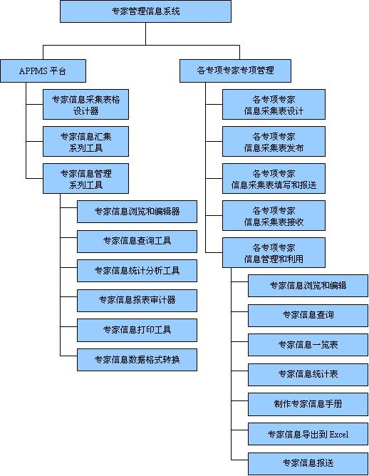

北京伊尔锐康人力资源有限公司自成立以来，致力于为政府机关及企事业单位提供专业的人才管理信息化解决方案。专家管理系统是伊尔锐康最早为客户研制开发的人才管理信息化解决方案之一。建立起信息共享、功能完备、操作简便、快速高效的专家管理系统，对建立专家联系制度、专家咨询制度、专家服务制度等管理制度体系，对专家培养选拔制度的建立和完善，进一步提高专家管理工作的现代化、社会化水平，更好地发挥专家作用具有非常重要的意义。
系统功能：
无纸化专家信息申报
根据各类专家申报要求，使用本系统进行专家申报信息的填写、汇总和上报等工作，实现无纸化专家信息申报，省去了申报材料运输、保管等环节，降低了工作强度，节省了时间。
专家信息动态管理
如果专家信息发生变化，通过本系统，可以将专家最新信息录入整理，单位人事部门审核后，专家管理部门实时接收，可以随时了解到专家的最新信息，便于为专家提供更好服务。
专家信息分类管理
根据用户的需求，可以建立专家分类标准和各类专家的信息结构，实现专家分类分层管理。
专家信息查询、统计、分析
系统提供多种查询方式、功能强大的统计报表设计器，用户可以设计专家管理工作中的各类表格，全面掌握专家情况，为后续人才队伍分析、政策研究及相关决策提供有力的数据支持和参考。

系统特点：该系统具备技术成熟、高稳定性和可伸缩性的优点，能够有效解决信息采集录入、多部门/单位协同工作、快速的高级分析等瓶颈问题；
能够协助国家部委、各级政府人事部门及企事业单位等广大客户开展本地区、本系统、本单位内部的各项专家管理工作，大大提高了专家管理的工作效率和质量；